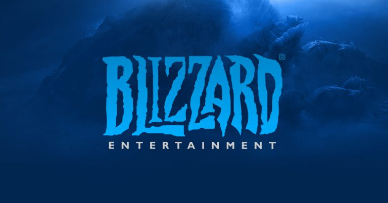

Sim, já temos um novo capítulo para a “tragédia da Activision Blizzard”. Só para recapitular, da última vez que falei sobre o caso aqui no MMORPGBR, citei uma queixa oficial feita pela Comissão de Igualdade de Oportunidades de Emprego (EEOC, sigla em inglês) contra a gigante dos games, em função dos casos de assédio, abusos e discriminação no ambiente de trabalho. Na ocasião, ressaltei que a história foi “resolvida” com um acordo de $18 milhões. Porém, parece que outra entidade importante resolveu contestar essa decisão… vamos entender melhor essa história?

Para quem não se lembra, o primeiro processo, aquele que trouxe à tona todos os problemas da Activision Blizzard, foi iniciado pelo Departamento de Justo Emprego e Moradia da Califórnia (DFEH). E sim, foi justamente esse órgão governamental que resolveu contestar o acordo de $18 milhões firmado entre a gigante dos games e o EEOC. As informações acerca dessa contestação chegaram ao conhecimento de todos por meio de um documento revelado pelo jornalista Stephen Totilo, do site Axios.
De modo geral, o documento indica que o DFEH não crê que o acordo de $18 milhões irá resolver os problemas e dar o devido amparo às vítimas e que essa “negociação” acabaria destruindo evidências das investigações que vêm sendo realizadas pelo órgão. Em outras palavras, parece que a “jogada” da Activision Blizzard com outra entidade não deverá surtir efeito até que as investigações do primeiro processo sejam concluídas. Vale lembrar que o DFEH já contestou um acordo semelhante, em relação a um processo envolvendo a Riot Games, ou seja, o órgão parece não ser a favor de “negociações” que visam encerrar os processos antes da conclusão das investigações. Com isso, a história continuará ganhando novos capítulo. E, claro, temos que continuar de olho.